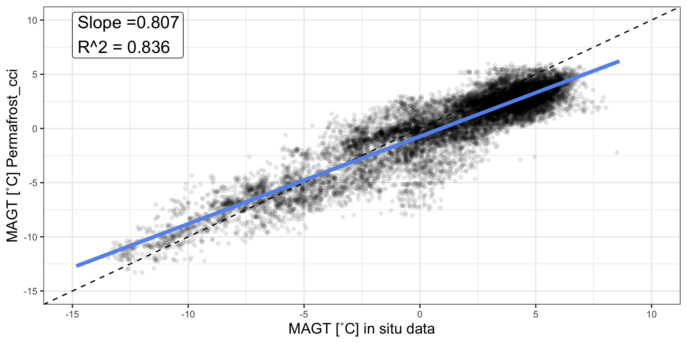
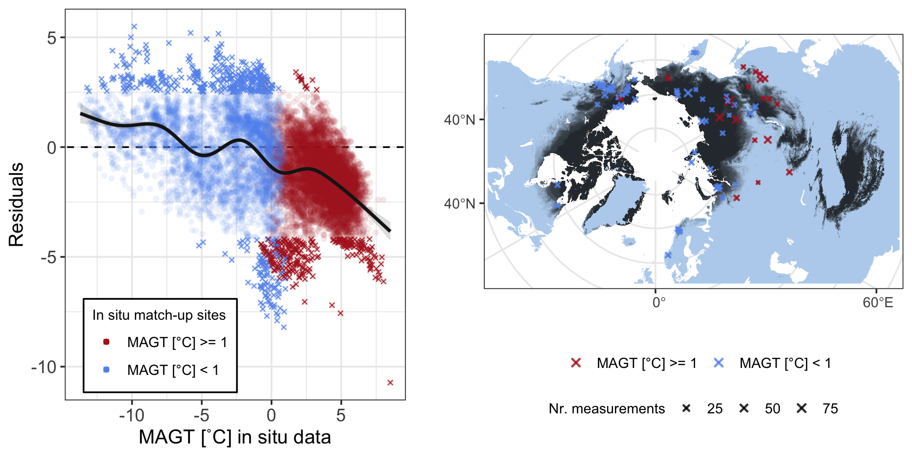
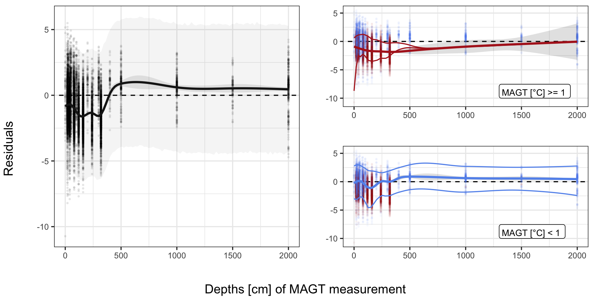
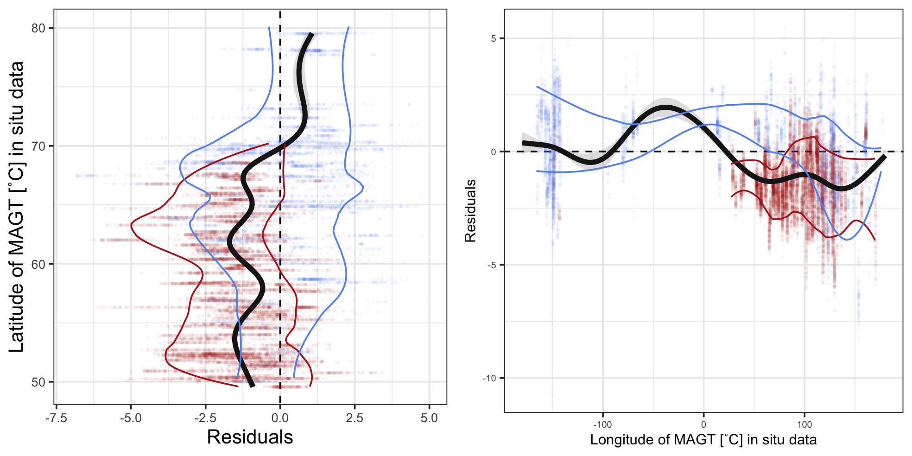

library(readxl)
library(ncdf4)
library(raster)
library(tidyverse)
library(ggforce)
library(grid)
library(mgcv)
library(sf)
sf::sf_use_s2(FALSE) mod <- lm(MAGT_Permafrost_cci~Temp, data = inSitu_temp)
modM <- data.frame(Temp=seq(min(inSitu_temp$Temp), max(inSitu_temp$Temp), length = 50))
modM <- data.frame(modM, predict(mod, newdata=modM, interval = "prediction"))
png("figures/Figure_3.1.png", width = 20, height = 10, units = "cm", res = 250)
ggplot(NULL, aes(x, y)) +
geom_label(aes(-15, 6.5, hjust = 0, vjust = 0,
label = paste0("Slope =",signif(mod$coef[[2]], 3), "\n", "R^2 = ", signif(summary(mod)$adj.r.squared, 3))), size = 5) +
geom_point(data = inSitu_temp, mapping = aes(Temp, MAGT_Permafrost_cci),
alpha = 0.1, shape = 16, fill = "grey40") +
theme_bw() +
geom_abline(slope = 1, intercept = 0, linetype = "dashed") +
# geom_ribbon(data = modM, mapping = aes(x = Temp, y = fit, ymin = lwr, ymax = upr), alpha = 0.15) +
geom_line( data = modM, mapping = aes(x = Temp, y = fit), col = "cornflowerblue", size = 1.5) +
labs(y = "MAGT [˚C] Permafrost_cci", x = "MAGT [˚C] in situ data") +
xlim(-15, 10) + ylim(-15, 10) +
theme(text = element_text(size=rel(3.5))) ## Warning: Removed 15266 rows containing missing values (geom_point). ## Warning: Removed 1 row(s) containing missing values (geom_path). dev.off() ## quartz_off_screen
## 2
###################
#### Residuals ####
###################
predInterval <- function(x, newdat, lower = .025, upper = 0.975) {
model = x
p <- predict(model, newdat, type = "link", se.fit = TRUE)
upr <- p$fit + (2 * p$se.fit)
lwr <- p$fit - (2 * p$se.fit)
newdat$upr <- model$family$linkinv(upr)
newdat$lwr <- model$family$linkinv(lwr)
newdat$fit <- predict(model, newdat)
beta <- coef(model)
V <- vcov(model)
num_beta_vecs <- 10000
Cv <- chol(V)
nus <- rnorm(num_beta_vecs * length(beta))
beta_sims <- beta + t(Cv) %*% matrix(nus, nrow = length(beta), ncol = num_beta_vecs)
covar_sim <- predict(model, newdata = newdat, type = "lpmatrix")
linpred_sim <- covar_sim %*% beta_sims
invlink <- function(x) x
exp_val_sim <- invlink(linpred_sim)
y_sim <- matrix(rnorm(n = prod(dim(exp_val_sim)), mean = exp_val_sim, sd = summary(model)$scale),
nrow = nrow(exp_val_sim),
ncol = ncol(exp_val_sim))
out <- as.data.frame(t(apply(y_sim, 1, quantile, prob = c(lower, upper))))
names(out)[1:2] <- c("plwr", "pupr")
cbind(newdat, out)
}
resTab <- inSitu_temp %>% filter(!is.na(Temp) & !is.na(MAGT_Permafrost_cci)) %>%
mutate(res = as.numeric(resid(lm(MAGT_Permafrost_cci-Temp ~ 0))))
#### over Temps
model <- gam(res ~ s(Temp), data = resTab)
newdat <- data.frame(Temp = seq(min(resTab$Temp), max(resTab$Temp), length = 100))
dat <- lapply(list(model), predInterval, newdat = newdat)
## Outliers
pl1 <- ggplot(NULL, aes(x, y)) +
theme_bw() +
geom_abline(slope = 0, intercept = 0, linetype = "dashed") +
geom_point(data = resTab, mapping = aes(Temp, res, col = coldSite), alpha = 0.1, shape = 16, size = 1.5) +
geom_point(data = resTab %>% filter(res<quantile(res, probs = 0.025) | res>quantile(res, probs = 0.975)),
mapping = aes(Temp, res, col = coldSite), alpha = 0.8, shape = 4, size = 1) +
scale_color_manual(values = c("firebrick", "cornflowerblue"), labels = c('MAGT [°C] >= 1', 'MAGT [°C] < 1')) +
geom_ribbon(data = dat[[1]], mapping = aes(x = Temp, y = fit, ymin = lwr, ymax = upr), alpha = 0.15, fill = "grey10") +
geom_line(data = dat[[1]], mapping = aes(x = Temp, y = fit), col = "grey10", size = 1) +
labs(y = "Residuals", x = "MAGT [˚C] in situ data", col = "In situ match-up sites") +
guides(colour = guide_legend(override.aes = list(alpha = 1))) +
theme(axis.title = element_text(size=rel(1.1)),
axis.text = element_text(size=rel(1)),
legend.position = c(0.28, 0.14),
legend.background = element_rect(fill = "white", color = "black"),
legend.text = element_text(size=rel(0.8)),
legend.title = element_text(size=rel(0.8)))
resMap <- resTab %>% filter(res<quantile(res, probs = 0.025) | res>quantile(res, probs = 0.975)) %>% group_by(Name) %>% mutate(N = n()) %>%
filter(!duplicated(Name))
crds_pts <- st_as_sf(resMap, coords = c("Longitude", "Latitude")) %>% st_set_crs(4326) %>%
st_transform("+proj=stere +lat_0=90 +lat_ts=71 +lon_0=0 +x_0=0 +y_0=0 +datum=WGS84 +units=m +no_defs") %>% st_coordinates()
pl2 <- map +
geom_raster(data=rast_df, aes(x=x, y=y, fill=value), alpha=0.8, show.legend = FALSE) +
scale_fill_gradient(low="slategray2", high="black") +
labs(fill = "Permafrost_cci PFR (2018)") +
ggnewscale::new_scale_fill() +
geom_jitter(data = data.frame(crds_pts, coldSite = resMap$coldSite, n = resMap$N),
aes(x = X, y = Y, col = coldSite, size = n), alpha = 0.8, shape = 4, stroke = 1, width = 60000, height = 60000) +
scale_color_manual(values = c("firebrick", "cornflowerblue"), labels = c('MAGT [°C] >= 1', 'MAGT [°C] < 1')) +
scale_size(range = c(0.15, 1.7)) +
labs(x = "", y = "", col = "0.99 percentile of residuals", size = "Nr. measurements") +
theme(legend.position="bottom", legend.box="vertical", legend.margin=margin(),
legend.background = element_rect(fill = "white"),
legend.text = element_text(size=rel(0.8)),
legend.title = element_text(size=rel(0.8)))
png("figures/Figure_3.2.png", width = 20, height = 10, units = "cm", res = 250)
gridExtra::grid.arrange(pl1, pl2, nrow =1, widths = c(1,1.2)) ## Warning: Raster pixels are placed at uneven horizontal intervals and will be
## shifted. Consider using geom_tile() instead. ## Warning: Raster pixels are placed at uneven vertical intervals and will be
## shifted. Consider using geom_tile() instead. ## Warning: Removed 910 rows containing missing values (geom_raster). dev.off() ## quartz_off_screen
## 2
#### over Depths
model1 <- gam(res ~ s(Depth), data = resTab)
model2 <- gam(res ~ s(Depth), data = resTab %>% filter(!coldSite))
model3 <- gam(res ~ s(Depth), data = resTab %>% filter(coldSite))
### confidence interval
newdat <- data.frame(Depth = seq(min(resTab$Depth), max(resTab$Depth), length = 100))
dat <- lapply(list(model1, model2, model3), predInterval, newdat = newdat)
qtilesWarm <- resTab %>% filter(!coldSite) %>% group_by(Depth) %>% summarise(upper = quantile(res, probs = 0.05), lower = quantile(res, probs = 0.95))
qtilesCold <- resTab %>% filter(coldSite) %>% group_by(Depth) %>% summarise(upper = quantile(res, probs = 0.05), lower = quantile(res, probs = 0.95))
pl1 <- ggplot(NULL, aes(x, y)) +
theme_bw() +
geom_abline(slope = 0, intercept = 0, linetype = "dashed") +
geom_point(data = resTab, mapping = aes(Depth, res), alpha = 0.1, shape = 16, size = .7, show.legend = FALSE) +
geom_ribbon(data = dat[[1]], mapping = aes(x = Depth, y = fit, ymin = plwr, ymax = pupr), alpha = 0.05) +
geom_ribbon(data = dat[[1]], mapping = aes(x = Depth, y = fit, ymin = lwr, ymax = upr), alpha = 0.1, fill = "grey10") +
geom_line(data = dat[[1]], mapping = aes(x = Depth, y = fit), col = "grey10", size = 1) +
labs(y = "", x = "") +
theme(text = element_text(size=rel(3.5)))
pl2 <- ggplot(NULL, aes(x, y)) +
theme_bw() +
geom_label(aes(1300, -10, hjust = 0, vjust = 0, label = "MAGT [°C] >= 1"), size = 3) +
geom_abline(slope = 0, intercept = 0, linetype = "dashed") +
geom_point(data = resTab, mapping = aes(Depth, res, col = coldSite), alpha = 0.05, shape = 16, size = 0.7, show.legend = FALSE) +
scale_color_manual(values = c("firebrick", "cornflowerblue"), labels = c('MAGT [°C] >= 1', 'MAGT [°C] < 1')) +
geom_ribbon(dat[[2]], mapping = aes(x = Depth, y = fit, ymin = upr, ymax = lwr), alpha = 0.15) +
geom_line(dat[[2]], mapping = aes(x = Depth, y = fit), col = "firebrick", size = 1) +
geom_smooth(qtilesWarm, mapping = aes(x = Depth, y = lower), col = "firebrick", size = 0.5, se = FALSE, span = 0.45) +
geom_smooth(qtilesWarm, mapping = aes(x = Depth, y = upper), col = "firebrick", size = 0.5, se = FALSE, span = 0.45) +
labs(y = "", x = "") +
theme(text = element_text(size=rel(3.5)))
pl3 <- ggplot(NULL, aes(x, y)) +
theme_bw() +
geom_label(aes(1300, -10, hjust = 0, vjust = 0, label = "MAGT [°C] < 1"), size = 3) +
geom_abline(slope = 0, intercept = 0, linetype = "dashed") +
geom_point(data = resTab, mapping = aes(Depth, res, col = coldSite), alpha = 0.05, shape = 16, size = 0.7, show.legend = FALSE) +
scale_color_manual(values = c("firebrick", "cornflowerblue"), labels = c('MAGT [°C] >= 1', 'MAGT [°C] < 1')) +
geom_ribbon(dat[[3]], mapping = aes(x = Depth, y = fit, ymin = upr, ymax = lwr), alpha = 0.15) +
geom_line(dat[[3]], mapping = aes(x = Depth, y = fit), col = "cornflowerblue", size = 1) +
geom_smooth(qtilesCold, mapping = aes(x = Depth, y = lower), col = "cornflowerblue", size = 0.5, se = FALSE, span = 0.45) +
geom_smooth(qtilesCold, mapping = aes(x = Depth, y = upper), col = "cornflowerblue", size = 0.5, se = FALSE, span = 0.45) +
labs(y = "", x = "") +
theme(text = element_text(size=rel(3.5)))
png("figures/Figure_3.3.png", width = 20, height = 10, units = "cm", res = 250)
gridExtra::grid.arrange(pl1, pl2, pl3, layout_matrix = rbind(c(1,2),c(1,3)), heights=c(1, 1), bottom = "Depths [cm] of MAGT measurement",
left = "Residuals") ## `geom_smooth()` using method = 'loess' and formula 'y ~ x'
## `geom_smooth()` using method = 'loess' and formula 'y ~ x'
## `geom_smooth()` using method = 'loess' and formula 'y ~ x'
## `geom_smooth()` using method = 'loess' and formula 'y ~ x' dev.off() ## quartz_off_screen
## 2
#### over Latitudes
model <- gam(res ~ s(Latitude), data = resTab)
### confidence interval
newdat <- data.frame(Latitude = seq(min(resTab$Latitude), max(resTab$Latitude), length = 100))
dat <- lapply(list(model), predInterval, newdat = newdat)
qtilesWarm <- resTab %>% filter(!coldSite) %>% mutate(Latgr = as.character(cut(Latitude, seq(45, 90, length = 60)))) %>%
mutate(grLat = as.numeric(substring(Latgr, 2, 5)) + (as.numeric(substring(Latgr, 7, 10)) - as.numeric(substring(Latgr, 2, 5)))) %>%
group_by(grLat) %>% summarise(upper = quantile(res, probs = 0.05), lower = quantile(res, probs = 0.95)) ## Warning in mask$eval_all_mutate(quo): NAs introduced by coercion
## Warning in mask$eval_all_mutate(quo): NAs introduced by coercion
## Warning in mask$eval_all_mutate(quo): NAs introduced by coercion qtilesCold <- resTab %>% filter(coldSite) %>% mutate(Latgr = as.character(cut(Latitude, seq(45, 90, length = 60)))) %>%
mutate(grLat = as.numeric(substring(Latgr, 2, 5)) + (as.numeric(substring(Latgr, 7, 10)) - as.numeric(substring(Latgr, 2, 5)))) %>%
group_by(grLat) %>% summarise(upper = quantile(res, probs = 0.05), lower = quantile(res, probs = 0.95)) ## Warning in mask$eval_all_mutate(quo): NAs introduced by coercion
## Warning in mask$eval_all_mutate(quo): NAs introduced by coercion
## Warning in mask$eval_all_mutate(quo): NAs introduced by coercion pl1 <- ggplot(NULL, aes(x, y)) +
theme_bw() +
geom_abline(slope = 0, intercept = 0, linetype = "dashed") +
geom_point(data = resTab, mapping = aes(Latitude, res, col = coldSite), alpha = 0.05, shape = 16, size = 0.7, show.legend = FALSE) +
scale_color_manual(values = c("firebrick", "cornflowerblue"), labels = c('MAGT [°C] >= 1', 'MAGT [°C] < 1')) +
geom_ribbon(data = dat[[1]], mapping = aes(x = Latitude, y = fit, ymin = lwr, ymax = upr), alpha = 0.15, fill = "grey10") +
geom_line(data = dat[[1]], mapping = aes(x = Latitude, y = fit), col = "grey10", size = 1.5) +
geom_smooth(qtilesWarm, mapping = aes(x = grLat, y = lower), col = "firebrick", size = 0.5, se = FALSE, span = 0.45) +
geom_smooth(qtilesWarm, mapping = aes(x = grLat, y = upper), col = "firebrick", size = 0.5, se = FALSE, span = 0.45) +
geom_smooth(qtilesCold, mapping = aes(x = grLat, y = lower), col = "cornflowerblue", size = 0.5, se = FALSE, span = 0.45) +
geom_smooth(qtilesCold, mapping = aes(x = grLat, y = upper), col = "cornflowerblue", size = 0.5, se = FALSE, span = 0.45) +
ylim(-7,5) +
coord_flip() +
labs(y = "Residuals", x = "Latitude of MAGT [˚C] in situ data") +
theme(text = element_text(size=rel(3.5)))
#### over Longitudes
model <- gam(res ~ s(Longitude), data = resTab)
### confidence interval
newdat <- data.frame(Longitude = seq(-180, 180, length = 100))
dat <- lapply(list(model), predInterval, newdat = newdat)
LonGroup <- data.frame(Lon = seq(-180, 180, length = 180), LonGr = 1:180)
qtilesWarm <- resTab %>% filter(!coldSite) %>% mutate(LonGr = cut(Longitude, seq(-180, 180, length = 180), labels = FALSE)) %>%
left_join(LonGroup, by = "LonGr") %>%
group_by(Lon) %>% summarise(upper = quantile(res, probs = 0.05), lower = quantile(res, probs = 0.95))
qtilesCold <- resTab %>% filter(coldSite) %>% mutate(LonGr = cut(Longitude, seq(-180, 180, length = 180), labels = FALSE)) %>%
left_join(LonGroup, by = "LonGr") %>%
group_by(Lon) %>% summarise(upper = quantile(res, probs = 0.05), lower = quantile(res, probs = 0.95))
pl2 <- ggplot(NULL, aes(x, y)) +
theme_bw() +
geom_abline(slope = 0, intercept = 0, linetype = "dashed") +
geom_point(data = resTab, mapping = aes(Longitude, res, col = coldSite), alpha = 0.05, shape = 16, size = 0.7, show.legend = FALSE) +
scale_color_manual(values = c("firebrick", "cornflowerblue"), labels = c('MAGT [°C] >= 1', 'MAGT [°C] < 1')) +
geom_ribbon(data = dat[[1]], mapping = aes(x = Longitude, y = fit, ymin = lwr, ymax = upr), alpha = 0.15, fill = "grey10") +
geom_line(data = dat[[1]], mapping = aes(x = Longitude, y = fit), col = "grey10", size = 1.5) +
geom_smooth(qtilesWarm %>% filter(Lon>0), mapping = aes(x = Lon, y = lower), col = "firebrick", size = 0.5, se = FALSE, span = 0.45) +
geom_smooth(qtilesWarm %>% filter(Lon>0), mapping = aes(x = Lon, y = upper), col = "firebrick", size = 0.5, se = FALSE, span = 0.45) +
geom_smooth(qtilesCold, mapping = aes(x = Lon, y = lower), col = "cornflowerblue", size = 0.5, se = FALSE, span = 0.45) +
geom_smooth(qtilesCold, mapping = aes(x = Lon, y = upper), col = "cornflowerblue", size = 0.5, se = FALSE, span = 0.45) +
labs(y = "Residuals", x = "Longitude of MAGT [˚C] in situ data") +
theme(text = element_text(size=rel(3)))
png("figures/Figure_3.4.png", width = 20, height = 10, units = "cm", res = 250)
gridExtra::grid.arrange(pl1, pl2, layout_matrix = matrix(c(1,2), ncol = 2, byrow = TRUE)) ## `geom_smooth()` using method = 'loess' and formula 'y ~ x' ## Warning: Removed 2 rows containing non-finite values (stat_smooth). ## `geom_smooth()` using method = 'loess' and formula 'y ~ x' ## Warning: Removed 2 rows containing non-finite values (stat_smooth). ## `geom_smooth()` using method = 'loess' and formula 'y ~ x' ## Warning: Removed 1 rows containing non-finite values (stat_smooth). ## `geom_smooth()` using method = 'loess' and formula 'y ~ x' ## Warning: Removed 2 rows containing non-finite values (stat_smooth). ## Warning: Removed 24 rows containing missing values (geom_point). ## `geom_smooth()` using method = 'loess' and formula 'y ~ x'
## `geom_smooth()` using method = 'loess' and formula 'y ~ x'
## `geom_smooth()` using method = 'loess' and formula 'y ~ x'
## `geom_smooth()` using method = 'loess' and formula 'y ~ x' dev.off() ## quartz_off_screen
## 2